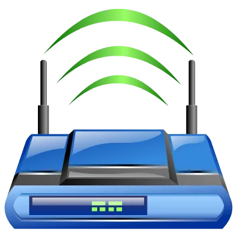

Asuswrt-Merlin
- Third-party firmware for Asus routers, based on the newer codebase.

- 4/5 dimensions have verifiable sources
- Only dimensions backed by verifiable sources are included; unevidenced dimensions remain null rather than receiving a neutral placeholder.
Candidate route
- Candidate use Evaluate alternative firmware for an Asus router still in service.
- Hardware scope Candidate Asus routers within upstream's support scope; exact models and stock-firmware prerequisites were not checked.
- What is known Third-party firmware for Asus routers, based on the newer codebase.
- GitHub Third party firmware for Asus routers (newer codebase)
- Evidence note E0 discovery candidate; the use description comes from upstream repository metadata or the README opening paragraph. Exact-device compatibility, installation, and long-term stability were not independently verified.
- Deep-audit outcome The project Wiki provides an exact model list, the official project download page separates current and unsupported models and publishes checksums, and ASUS documents rescue mode. This supports E1 without treating a model listing as a hands-on reproduction in this audit.
- Review record PS-asuswrt-merlin-ng · 2026-10-24
Cost evidence
- Used-price range No reliable source
- Modification cost No reliable source
Three checks before starting
- What you need An exact supported model, a wired computer, the matching image and checksum, and stock recovery firmware.Guide 1 ↗ · Guide 2 ↗ · Guide 3 ↗
- Rough steps Match the chassis model to the support table, verify the image, upgrade from the wired management UI, then restore only needed settings after reboot.Guide 1 ↗ · Guide 2 ↗
- When to stop Stop if the model is not currently supported, only an unsupported legacy image exists, the checksum differs, or stock recovery firmware cannot be prepared.Guide 1 ↗ · Guide 2 ↗ · Guide 3 ↗
Before you start
- Do not flash, disassemble, or buy parts without installation and recovery material for the exact model, hardware revision, and firmware.
Repository snapshot
- Archived No; not archived when checked
- Last push 2026-10-23T05:09:13Z
- Default branch main
- API license identifier NOASSERTION
- The license snapshot does not automatically cover firmware, models, images, trademarks, or third-party components; a recent push does not prove compatibility.